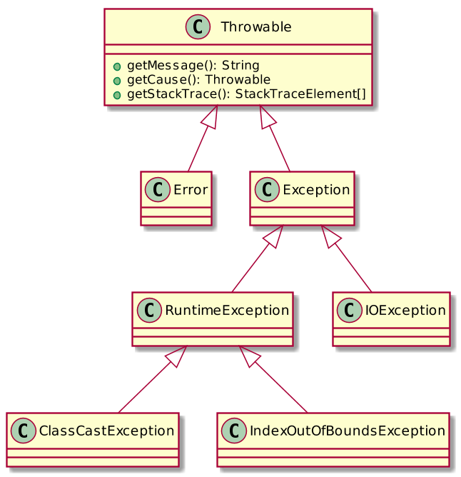
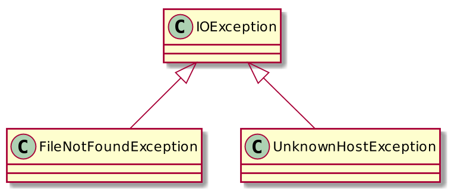
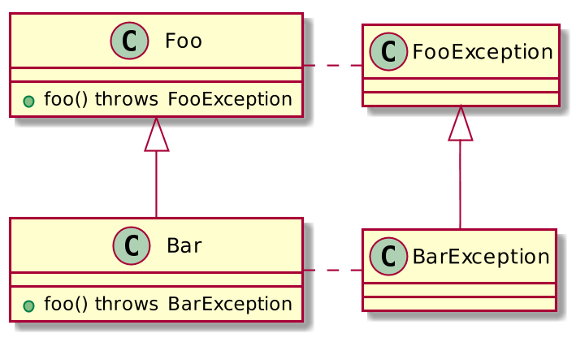
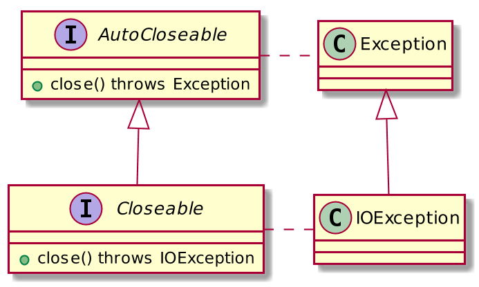
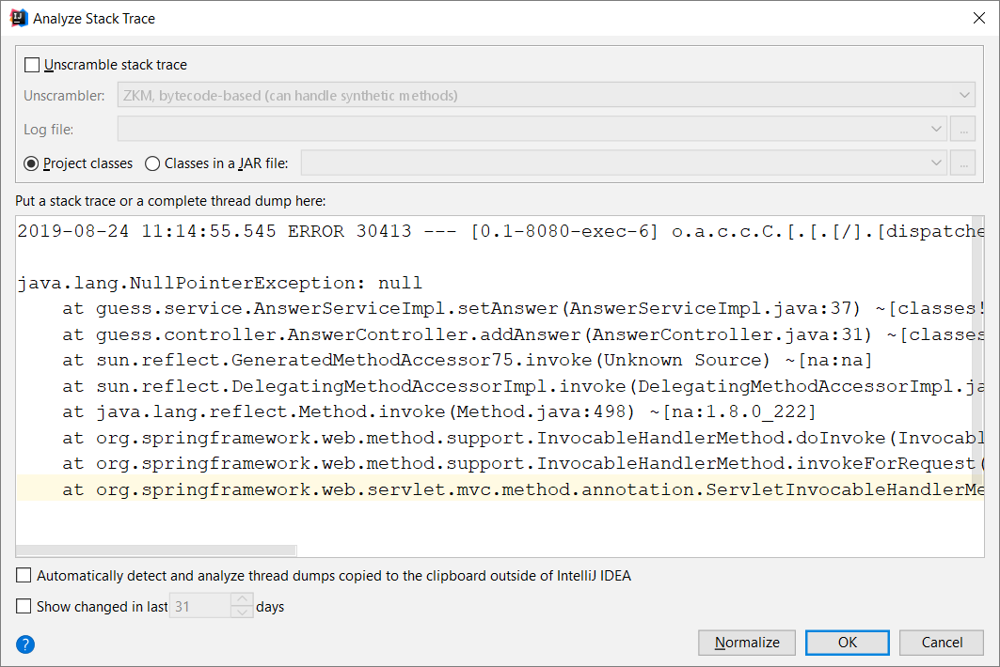
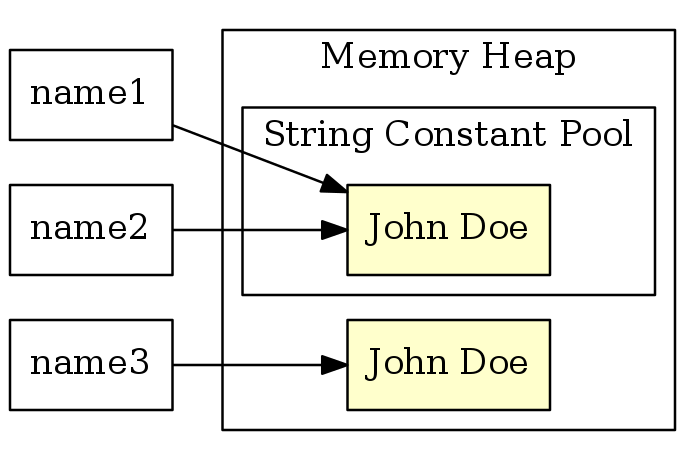

2019-08-24 11:14:55.545 ERROR 30413 --- [0.1-8080-exec-6] o.a.c.c.C.[.[.[/].[dispatcherServlet] : Servlet.service() for servlet [dispatcherServlet] in context with path [] threw exception [Request processing failed; nested exception is java.lang.NullPointerException] with root cause java.lang.NullPointerException: null at guess.service.AnswerServiceImpl.setAnswer(AnswerServiceImpl.java:37) ~[classes!/:na] at guess.controller.AnswerController.addAnswer(AnswerController.java:31) ~[classes!/:na] at sun.reflect.GeneratedMethodAccessor75.invoke(Unknown Source) ~[na:na] at sun.reflect.DelegatingMethodAccessorImpl.invoke(DelegatingMethodAccessorImpl.java:43) ~[na:1.8.0_222] at java.lang.reflect.Method.invoke(Method.java:498) ~[na:1.8.0_222] at org.springframework.web.method.support.InvocableHandlerMethod.doInvoke(InvocableHandlerMethod.java:190) ~[spring-web-5.1.8.RELEASE.jar!/:5.1.8.RELEASE] at org.springframework.web.method.support.InvocableHandlerMethod.invokeForRequest(InvocableHandlerMethod.java:138) ~[spring-web-5.1.8.RELEASE.jar!/:5.1.8.RELEASE] at org.springframework.web.servlet.mvc.method.annotation.ServletInvocableHandlerMethod.invokeAndHandle(ServletInvocableHandlerMethod.java:104) ~[spring-webmvc-5.1.8.RELEASE.jar!/:5.1.8.RELEASE] at org.springframework.web.servlet.mvc.method.annotation.RequestMappingHandlerAdapter.invokeHandlerMethod(RequestMappingHandlerAdapter.java:892) ~[spring-webmvc-5.1.8.RELEASE.jar!/:5.1.8.RELEASE] at org.springframework.web.servlet.mvc.method.annotation.RequestMappingHandlerAdapter.handleInternal(RequestMappingHandlerAdapter.java:797) ~[spring-webmvc-5.1.8.RELEASE.jar!/:5.1.8.RELEASE] at org.springframework.web.servlet.mvc.method.AbstractHandlerMethodAdapter.handle(AbstractHandlerMethodAdapter.java:87) ~[spring-webmvc-5.1.8.RELEASE.jar!/:5.1.8.RELEASE] at org.springframework.web.servlet.DispatcherServlet.doDispatch(DispatcherServlet.java:1039) ~[spring-webmvc-5.1.8.RELEASE.jar!/:5.1.8.RELEASE] at org.springframework.web.servlet.DispatcherServlet.doService(DispatcherServlet.java:942) ~[spring-webmvc-5.1.8.RELEASE.jar!/:5.1.8.RELEASE] at org.springframework.web.servlet.FrameworkServlet.processRequest(FrameworkServlet.java:1005) ~[spring-webmvc-5.1.8.RELEASE.jar!/:5.1.8.RELEASE] at org.springframework.web.servlet.FrameworkServlet.doPost(FrameworkServlet.java:908) ~[spring-webmvc-5.1.8.RELEASE.jar!/:5.1.8.RELEASE] at javax.servlet.http.HttpServlet.service(HttpServlet.java:660) ~[tomcat-embed-core-9.0.21.jar!/:9.0.21] at org.springframework.web.servlet.FrameworkServlet.service(FrameworkServlet.java:882) ~[spring-webmvc-5.1.8.RELEASE.jar!/:5.1.8.RELEASE] at javax.servlet.http.HttpServlet.service(HttpServlet.java:741) ~[tomcat-embed-core-9.0.21.jar!/:9.0.21] at org.apache.catalina.core.ApplicationFilterChain.internalDoFilter(ApplicationFilterChain.java:231) ~[tomcat-embed-core-9.0.21.jar!/:9.0.21] at org.apache.catalina.core.ApplicationFilterChain.doFilter(ApplicationFilterChain.java:166) ~[tomcat-embed-core-9.0.21.jar!/:9.0.21] at org.apache.tomcat.websocket.server.WsFilter.doFilter(WsFilter.java:53) ~[tomcat-embed-websocket-9.0.21.jar!/:9.0.21] at org.apache.catalina.core.ApplicationFilterChain.internalDoFilter(ApplicationFilterChain.java:193) ~[tomcat-embed-core-9.0.21.jar!/:9.0.21] at org.apache.catalina.core.ApplicationFilterChain.doFilter(ApplicationFilterChain.java:166) ~[tomcat-embed-core-9.0.21.jar!/:9.0.21] at org.springframework.web.filter.RequestContextFilter.doFilterInternal(RequestContextFilter.java:99) ~[spring-web-5.1.8.RELEASE.jar!/:5.1.8.RELEASE] at org.springframework.web.filter.OncePerRequestFilter.doFilter(OncePerRequestFilter.java:109) ~[spring-web-5.1.8.RELEASE.jar!/:5.1.8.RELEASE] at org.apache.catalina.core.ApplicationFilterChain.internalDoFilter(ApplicationFilterChain.java:193) ~[tomcat-embed-core-9.0.21.jar!/:9.0.21] at org.apache.catalina.core.ApplicationFilterChain.doFilter(ApplicationFilterChain.java:166) ~[tomcat-embed-core-9.0.21.jar!/:9.0.21] at org.springframework.web.filter.FormContentFilter.doFilterInternal(FormContentFilter.java:92) ~[spring-web-5.1.8.RELEASE.jar!/:5.1.8.RELEASE] at org.springframework.web.filter.OncePerRequestFilter.doFilter(OncePerRequestFilter.java:109) ~[spring-web-5.1.8.RELEASE.jar!/:5.1.8.RELEASE] at org.apache.catalina.core.ApplicationFilterChain.internalDoFilter(ApplicationFilterChain.java:193) ~[tomcat-embed-core-9.0.21.jar!/:9.0.21] at org.apache.catalina.core.ApplicationFilterChain.doFilter(ApplicationFilterChain.java:166) ~[tomcat-embed-core-9.0.21.jar!/:9.0.21] at org.springframework.web.filter.HiddenHttpMethodFilter.doFilterInternal(HiddenHttpMethodFilter.java:93) ~[spring-web-5.1.8.RELEASE.jar!/:5.1.8.RELEASE] at org.springframework.web.filter.OncePerRequestFilter.doFilter(OncePerRequestFilter.java:109) ~[spring-web-5.1.8.RELEASE.jar!/:5.1.8.RELEASE] at org.apache.catalina.core.ApplicationFilterChain.internalDoFilter(ApplicationFilterChain.java:193) ~[tomcat-embed-core-9.0.21.jar!/:9.0.21] at org.apache.catalina.core.ApplicationFilterChain.doFilter(ApplicationFilterChain.java:166) ~[tomcat-embed-core-9.0.21.jar!/:9.0.21] at org.springframework.web.filter.CharacterEncodingFilter.doFilterInternal(CharacterEncodingFilter.java:200) ~[spring-web-5.1.8.RELEASE.jar!/:5.1.8.RELEASE] at org.springframework.web.filter.OncePerRequestFilter.doFilter(OncePerRequestFilter.java:109) ~[spring-web-5.1.8.RELEASE.jar!/:5.1.8.RELEASE] at org.apache.catalina.core.ApplicationFilterChain.internalDoFilter(ApplicationFilterChain.java:193) ~[tomcat-embed-core-9.0.21.jar!/:9.0.21] at org.apache.catalina.core.ApplicationFilterChain.doFilter(ApplicationFilterChain.java:166) ~[tomcat-embed-core-9.0.21.jar!/:9.0.21] at org.apache.catalina.core.StandardWrapperValve.invoke(StandardWrapperValve.java:202) ~[tomcat-embed-core-9.0.21.jar!/:9.0.21] at org.apache.catalina.core.StandardContextValve.invoke(StandardContextValve.java:96) [tomcat-embed-core-9.0.21.jar!/:9.0.21] at org.apache.catalina.authenticator.AuthenticatorBase.invoke(AuthenticatorBase.java:490) [tomcat-embed-core-9.0.21.jar!/:9.0.21] at org.apache.catalina.core.StandardHostValve.invoke(StandardHostValve.java:139) [tomcat-embed-core-9.0.21.jar!/:9.0.21] at org.apache.catalina.valves.ErrorReportValve.invoke(ErrorReportValve.java:92) [tomcat-embed-core-9.0.21.jar!/:9.0.21] at org.apache.catalina.core.StandardEngineValve.invoke(StandardEngineValve.java:74) [tomcat-embed-core-9.0.21.jar!/:9.0.21] at org.apache.catalina.connector.CoyoteAdapter.service(CoyoteAdapter.java:343) [tomcat-embed-core-9.0.21.jar!/:9.0.21] at org.apache.coyote.http11.Http11Processor.service(Http11Processor.java:408) [tomcat-embed-core-9.0.21.jar!/:9.0.21] at org.apache.coyote.AbstractProcessorLight.process(AbstractProcessorLight.java:66) [tomcat-embed-core-9.0.21.jar!/:9.0.21] at org.apache.coyote.AbstractProtocol$ConnectionHandler.process(AbstractProtocol.java:853) [tomcat-embed-core-9.0.21.jar!/:9.0.21] at org.apache.tomcat.util.net.NioEndpoint$SocketProcessor.doRun(NioEndpoint.java:1587) [tomcat-embed-core-9.0.21.jar!/:9.0.21] at org.apache.tomcat.util.net.SocketProcessorBase.run(SocketProcessorBase.java:49) [tomcat-embed-core-9.0.21.jar!/:9.0.21] at java.util.concurrent.ThreadPoolExecutor.runWorker(ThreadPoolExecutor.java:1149) [na:1.8.0_222] at java.util.concurrent.ThreadPoolExecutor$Worker.run(ThreadPoolExecutor.java:624) [na:1.8.0_222] at org.apache.tomcat.util.threads.TaskThread$WrappingRunnable.run(TaskThread.java:61) [tomcat-embed-core-9.0.21.jar!/:9.0.21] at java.lang.Thread.run(Thread.java:748) [na:1.8.0_222]
Core Java
Курс лекций. Лекция 4
@inponomarev
Enumeration Classes
public enum Size
{ SMALL, MEDIUM, LARGE, EXTRA_LARGE };
. . .
Size s = Size.MEDIUM;
for (Size s: Size.values()) . . .
switch (s) {
case SMALL: . . .
case LARGE: . . .
}Поля, методы и конструкторы для перечислений
public enum Size
{
SMALL("S"), MEDIUM("M"), LARGE("L"), EXTRA_LARGE("XL");
private final String abbreviation;
private Size(String abbreviation) {
this.abbreviation = abbreviation;
}
public String getAbbreviation() {
return abbreviation;
}
}
. . .
Size s = . . .
s.getAbbreviation(); // вернёт S, M, L или XLБазовые принципы проектирования классов
Минимизируйте область видимости (
privateвсё, что только можно)Минимизируйте мутабельность (
finalна всём, что только можно)Документируйте точки расширения через наследование, или запрещайте наследование (
final)
Исключительные ситуации
Программные ошибки (баги): null pointer dereference, выход за границы массива, некорректное приведение типов, деление на ноль и т. п.
Некорректные входные данные
Железо и сеть: невозможность открыть файл, нехватка памяти / места на диске и т. п.
Исключение — способ недвусмысленно сообщить о том, что вызов функции завершился неудачей (в отличие от return codes и т. п.).
Иерархия классов исключений

Что делаем?
Errorи наследники — не обрабатываем (что-то катастрофическое случилось).RuntimeExceptionи наследники — их быть не должно (по идее, но не всё так просто).Checked exceptions — их обрабатываем.
Декларирование checked-исключений
public FileInputStream(String name) throws FileNotFoundException{
. . .
}Декларирование более чем одного исключения
class MyAnimation {
. . .
public Image loadImage(String s)
throws FileNotFoundException, EOFException {
. . .
}
}Не надо декларировать unchecked exceptions
Не надо декларировать исключения, если одно — подтип другого
Правда жизни: вам поможет IDE
Выбрасывание исключений
throw new EOFException();(Если мы выбрасываем checked exception, компилятор позволит это сделать либо если оно задекларировано, либо если оно обрабатывается в самом методе.)
Выбрасывание исключений
Не следует выбрасывать явно
ExceptionRuntimeExceptionThrowableError
(J. Bloch, Effective Java, Item 72)
Откуда наследовать своё собственное исключение? Вот в чём вопрос
Если наследовать от Exception — надо быть готовым, что его придётся декларировать или ловить всюду. Хорошо это или плохо?
Можно унаследоваться от RuntimeException. И забыть его поймать.
В эпоху лямбд и стримов checked exceptions это скорее головная боль.
Споры не прекращаются.
Как поймать исключение: try-catch блок
try {
code
more code
more code
} catch (ExceptionType e) {
handler for this type
//use e object to extract the data!
}Как поймать несколько типов исключений

try {
//code that might throw exceptions
} catch (FileNotFoundException e) {
//emergency action for missing files
} catch (UnknownHostException e) {
// emergency action for unknown hosts
} catch (IOException e) {
// emergency action for all other I/O problems
}try-multicatch
try {
//code that might throw exceptions
} catch (FileNotFoundException | UnknownHostException e) {
//emergency action for missing files or unknown hosts
}Перевыбрасывание исключений
. . . throws SQLException . . .
try {
access the database
} catch (Exception e) {
logger.log(level, message, e);
//хотя Exception есть тип более широкий,
//чем задекларирован в методе, компилятор поймёт,
//что всё ок
throw e;
}Обёртывание исключений
. . . throws ServletException . . .
try {
access the database
} catch (SQLException e) {
ServletException se = new ServletException("database error");
//сохраняем информацию о первопричине
se.initCause(e);
throw se;
}Переопределение методов с исключениями

Исключение может быть того же типа или субтипа
Не возбраняется, если его не будет вообще
Стандартные типы переиспользуемых unchecked-exceptions
J. Bloch 'Effective Java', Item 72:
| неправильный, ненулевой параметр метода |
| внутреннее состояние объекта не подходит для запуска метода |
| передан |
| Индексный параметр выходит за допустимый диапазон |
Вам будет очень хотеться сделать так…
try {
...
} catch (Exception e) {
e.printStackTrace();
//И компилятор счастлив!
//(но коллега во время код-ревью -- нет)
}…но так делать не надо!
Если не понятно, что делать с исключением
Задекларируйте checked exception в методе
Оберните в unchecked exception (
InvalidStateException, например)Lobmok’s
@SneakyThrows
Общее правило
Throw early, catch late.
Не откладывайте выбрасывание исключения, как только стала ясна причина ошибки.
Не спешите обрабатывать исключение, пока вам не стал полностью ясен механизм обработки.
finally-блок
InputStream in = new FileInputStream(. . .);
try {
// исключение может возникнуть здесь
code that might throw exceptions
// и даже возврат из метода вызовет блок finally!
if (...)
return;
} catch (IOException e) {
// бывает, исключение возникает во время
// обработки исключений
show error message
} finally {
// в любом случае сработает finally-блок!
in.close();
}Беда с finally-block
Иногда finally-блок сам может вызвать исключение
//К счастью, после Java 7 всего этого делать не надо
InputStream in = . . .;
try {
try {
code that might throw exceptions
} catch (Exception e) {
. . .
}
} finally {
try {
in.close();
} catch (Exception e) {
. . .
}
}try-with-resources-блок
Общая схема
try (Resource res = . . .) {
work with res
}Пример:
try (Scanner in = new Scanner(
new FileInputStream("/usr/share/dict/words")), "UTF-8") {
while (in.hasNext())
System.out.println(in.next());
}Множество ресурсов
try (Scanner in = new Scanner(
new FileInputStream("/usr/share/dict/words"), "UTF-8");
PrintWriter out = new PrintWriter("out.txt")) {
while (in.hasNext())
out.println(in.next().toUpperCase());
}Интерфейсы Closeable и AutoCloseable

Исключения — для исключительных случаев!
//ЧУДОВИЩНО. НЕ ДЕЛАЙТЕ ТАК
try {
int i = 0;
while (true)
range[i++].climb();
} catch (ArrayIndexOutOfBoundsException e) {
}
//ДЕЛАЙТЕ ТАК!!
for (Mountain m: range)
m.climb();Исключения — для исключительных случаев!
//ЧУДОВИЩНО. НЕ ДЕЛАЙТЕ ТАК
try {
Iterator<Foo> i = collection.iterator();
while (true)
Foo foo = i.next();
} catch (NoSuchElementException e) {
}
//ДЕЛАЙТЕ ТАК!!
for (Iterator<Foo> i = collection.iterator(); i.hasNext(); ) {
Foo foo = i.next();
. . .
}Не используйте исключения для контроля выполнения
Это маскирует настоящие ошибки и делает код трудным для поддержки.
Это затратно по ресурсам (исключения несут в себе Stack Trace).
Это медленно: компилятор не оптимизирует под исключения.
Исключение вылезло в production. Что делать?
Analyze → Analyze Stack Trace…

Исследуем стек вызовов

Здесь мы делаем паузу в изучении особенностей языка ради изучения библиотеки
J. Bloch, 'Effective Java': 'By using a standard library, you take advantage of the knowledge of the experts who wrote it and the experience of those who used it before you… Numerous features are added to the libraries in every major release, and it pays to keep abreast of these additions.'
Наряду с актуальными, "свежими" классами в библиотеках есть много старых классов, оставленных для обратной совместимости.
Вы встретите
Vector,Date,File,StringBuffer,Random, о которых я не буду рассказывать на лекциях.Будьте внимательны: использование устаревших классов в существующем коде, в примерах в интернете и т. п. не оправдывает их использование в новом коде.
Отдельный пример из книги Effective Java: ThreadLocalRandom
//Плохо: сид выбирается при каждом вызове. НЕТ!!
double rnd = (new Random()).nextDouble();
//До Java 7+ так было нормально, но теперь НЕТ!!
static final Random r = new Random();
static int random() {
return r.nextDouble();
}
//ТЕПЕРЬ НУЖНО ТАК: в 3.6 раз быстрее, проще, качественнее
int rnd = ThreadLocalRandom.current().nextDouble();Класс String
String e = ""; // an empty string
String java = "Java\u2122"; //Java™Строка — иммутабельный объект.
Нужна другая строка? Сооружаем новую:
String greeting = "Hello!"
greeting = greeting.substring(0, 3) + "p!"; //Help!Хотя внутри строки — массив, изменить его отдельные элементы нельзя!
Внутреннее представление строк
До Java 9 —
char[]После Java 9 —
byte[]иbyte coderUTF-16 / Latin1 ('Compact Strings')
Пул строковых констант
|  |
Сравнение строк
if (a == "John Doe")— неправильно, ошибка новичка.if (a.equals("John Doe"))— плохо, получим NPE, еслиa == null.if ("John Doe".equals(a))— так делают серьёзные ребята.if ("John Doe".equalsIgnoreCase(a))— сравнение без учёта регистра.if(str != null && !str.trim().isEmpty())— в этой строке что-то есть!
Конкатенация строк
String foo = "foo";
String bar = "bar";
System.out.println(foo + bar); //foobarСитуация такова:
Пользовательской перегрузки операторов в Java не предусмотрено.
Оператор
+для строк перегружен на уровне языка.Оператор
==для строк не перегружен, хоть его неперегруженная версия для строк и не имеет смысла :-(
Конкатенация строк: проблема производительности
//Плохая производительность, не делайте так!
String result = "";
for (int i = 0; i < numItems(); i++)
result += lineForItem(i);
return result;Конкатенация строк: используйте StringBuilder!
//Заранее можно аллоцировать приблизительное кол-во символов
StringBuilder b = new StringBuilder(numItems() * LINE_WIDTH);
//А можно и по умолчанию: new StringBuilder() (16 chars)
for (int i = 0; i < numItems(); i++)
b.append(lineForItem(i));
return b.toString();Длина строки
Длина строки в UTF-16 code units:
String greeting = "Hello";
int n = greeting.length(); // is 5."Реальная" длина строки в code points:
int cpCount = greeting.codePointCount(0, greeting.length());Символ на i-й позиции
//работает за время O(1)
char first = greeting.charAt(0); // first is 'H'
char last = greeting.charAt(4); // last is 'o'Если нужны code points:
int[] codePoints = str.codePoints().toArray();Полезные методы
int length()
char charAt(int index)
int compareTo(String other)
boolean equals(Object other)
boolean equalsIgnoreCase(Object other)
boolean startWith(String prefix)
boolean endsWith(String prefix)
String toLowerCase() / String toUpperCase()
String trim()
String join(CharSequence delimiter, CharSequence... elements)Вредные методы
indexOf../lastIndexOf..replace..split..
В комбинации c substring и конкатенацией их используют для извлечения данных / преобразования строк.
Не делайте так. Это путь к бесконечным багам, бесконечной боли и бесконечному стыду. Используйте конечные автоматы или регулярные выражения.